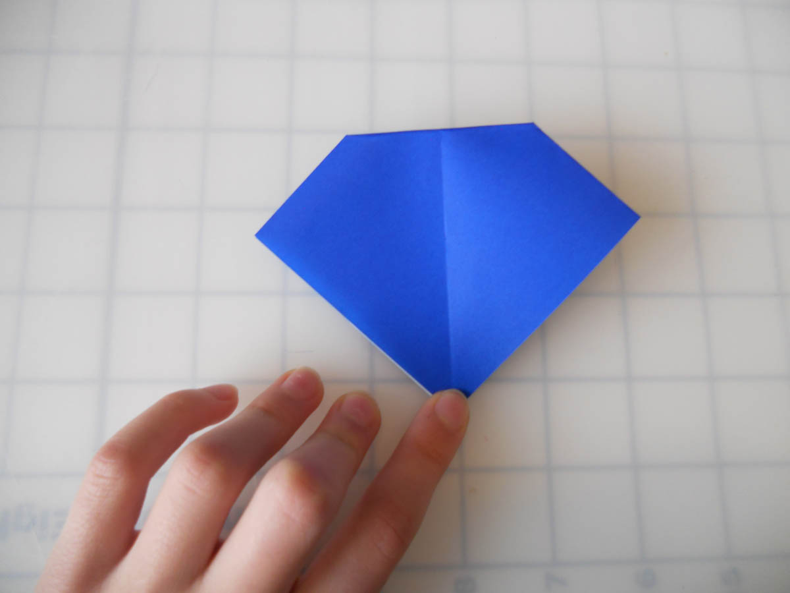

How to do an Origami Sink Fold
To do an origami sink fold, you spread open your model and collapse a point. Learn to do one here.
1. Start with a Preliminary base. Click the
link if you don't know how to make one.
2. Mountain fold the tip down. The
measurements don't have to be exact. Unfold.

3. Mountain fold the tip behind on the
crease from step 2. Unfold.
4. Spread the model apart, as shown.
5. Mountain fold all the edges of the central
square.
6. Step 5 completed.
7. Grasp the paper as shown.
8. Collapse the center.
9. Step 8 completed.
10. Bring the sides together again, so the
paper looks kind of like the preliminary
base you started with.
11. Flatten the paper. You have made a sink
fold!